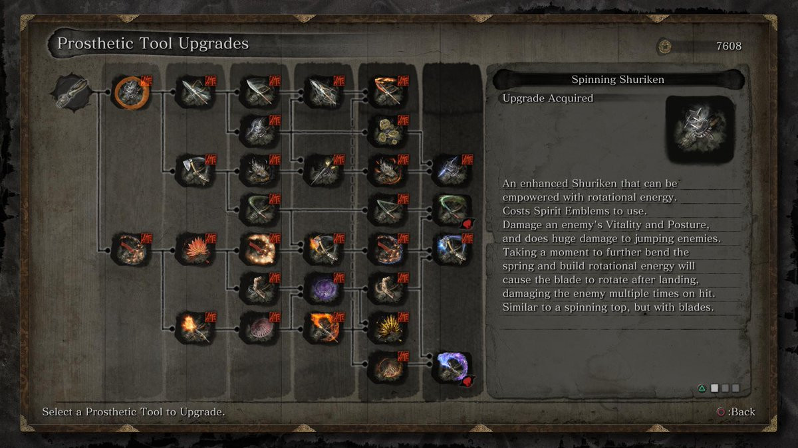
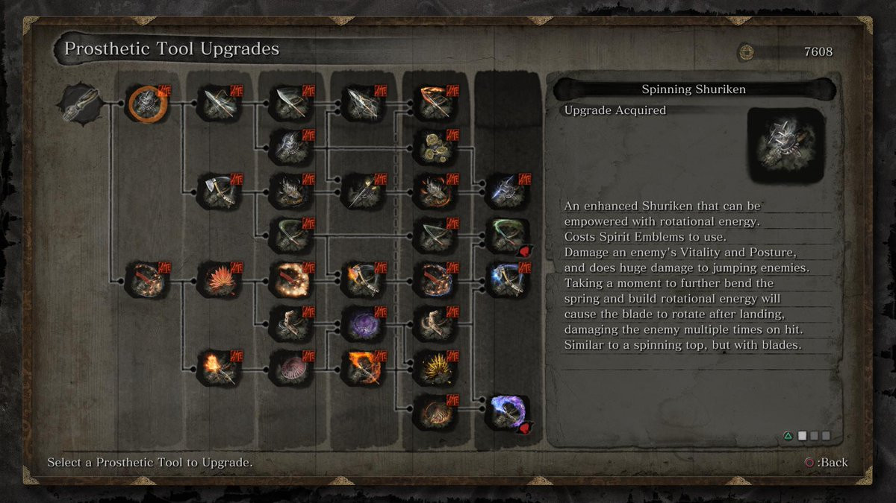

Prosthetic tools
This page is about everything that has to do with prosthetic tools, were to find them, what material you need to upgrade and how to use them. 

This page is about everything that has to do with prosthetic tools, were to find them, what material you need to upgrade and how to use them. 